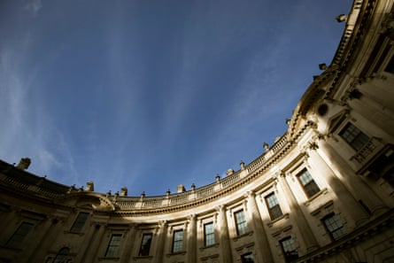
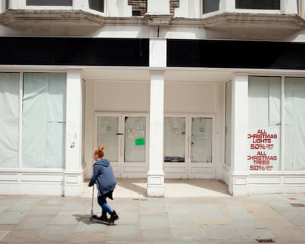
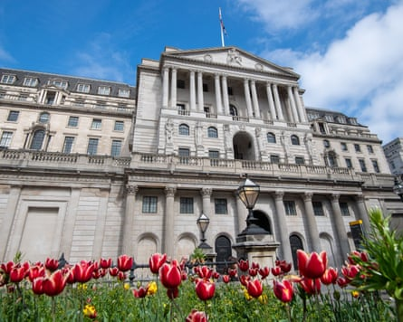

Rachel Reeves is under pressure to tackle a multibillion-pound shortfall in the government finances.
Labour’s high-stakes welfare U-turn and a spike in bond markets prompted by speculation over the chancellor’s position has dragged the government’s tax and spending plans into the spotlight.
Ministers have warned of “financial consequences” after the backtracking on disability benefits and winter fuel payments for pensioners, which have a price tag north of £6bn.
Alongside a sluggish economic outlook and possible downgrade in productivity forecasts from the Office for Budget Responsibility at the autumn budget, economists at Deutsche Bank predict that Reeves could face a £30bn shortfall against her self-imposed fiscal rules.
This has raised questions over how the chancellor responds. Reeves has several options:
Break her fiscal rules
Likelihood: 1/5
Reeves has said her fiscal rules are “iron-clad” and “non-negotiable,” despite mounting economic headwinds that have made them tougher to meet. Her primary target rule requires revenue to meet day-to-day spending by 2029-30.
From next year, there is a little extra wriggle room: the rule will shift to a rolling three-year target, and will require the day-to-day budget to be in surplus or deficit by no more than 0.5% of GDP.
The HM Treasury building in London.Photograph: Bloomberg/Getty Images
Several leading economists argue the fiscal rules are not fit for purpose and ought to be replaced, with pressure growing from within Labour ranks, too. Many economists, however, predict that financial markets would balk at higher borrowing.
Part of the issue is that Britain’s fiscal rules have been repeatedly changed before, testing patience in financial markets.
Aiming to hit the rules by a fine margin, weak economic growth, higher interest rates and already elevated debt levels also make conditions challenging.
Cut spending
Likelihood: 2/5
After the U-turns on the welfare bill and pensioners’ winter fuel payments, the government’s ability to find politically feasible budget savings has taken a heavy blow.
Labour outlined its priorities up to the next general election at last month’s high-profile spending review , which makes it challenging for the chancellor to find further savings. Reopening talks with her cabinet colleagues from a weakened position, so soon after the spending review, would be a tough ask.
Protesters against the welfare bill and planned Pip cuts stop traffic at Parliament Square, London.Photograph: Jill Mead/The Guardian
To make way for bigger cash injections for health and defence the spending review settlements for some departments already entailed cuts in real terms, with the Home Office among the biggest losers. All departments were also tasked with finding savings of at least 5% by the end of the decade.
However, some economists say the size of the British state is increasing at an unsustainable rate. Spending as a share of GDP is forecast to remain permanently higher than pre-pandemic levels, at about 44%.
A fresh round of cuts would imperil Labour’s promises to fix Britain’s battered public services and for “no return to austerity”. They could come with severe political costs if voters saw little progress before the next election.
“Recent events have confirmed one thing: spending cuts have likely reached their political limits,” said Sanjay Raja, senior economist at Deutsche Bank.
Increase income taxes
Likelihood: 3/5
Labour made a manifesto promise not to increase income tax, VAT and employee national insurance contributions (NICs). While party strategists felt this was vital to win the general election, most economists think it was a serious mistake. Several leading experts argue the chancellor should reconsider.
Raising the basic rate of income tax by 1p would yield an extra £8bn a year, while a 2p increase in employee NICs would result in about £10bn.
Most economists think it was a serious mistake for Labour to promise not to raise income tax, VAT or employee national insurance contributions.Photograph: mundissima/Alamy
The consultancy Capital Economics said one option could be to introduce a new variant of income tax, for example through a new health and social care or defence levy – similar to the plan made by Boris Johnson and scrapped by Liz Truss.
Some economists highlight the £20bn of cuts to employee national insurance contributions made in the final months of the last Tory government. Viewed by many as a post-election trap for Labour Reeves did not oppose them. Reversing this now would be tougher, but could be done by blaming the Tories for an irresponsible and unsustainable decision.
A more palatable option could be to extend a freeze on personal tax thresholds. Introduced by the Tories in 2021, the “stealth” tax-raising measure drags people into paying the higher rate of income tax. Due to end in 2028 , a two-year extension would raise £8bn a year extra by 2029-30.
Reeves has previously vowed not to repeat anything on the scale of her £40bn tax-raising autumn budget, and has said Britain’s tax levels as a share of the economy are already at record levels.
While the UK tax bill is historically high, at about 35%, it remains below many comparable advanced economies ; including France, Germany, and the high-tax and spend Nordic states.
Impose wealth taxes
Likelihood: 4/5
Reeves could dust off a memo from Angela Rayner sent to her before the March spring statement, in which the deputy prime minister urged the chancellor to consider a series of wealth taxes to raise up to £4bn a year.
Suggestions included ending inheritance tax relief on shares listed on the smaller Aim stock market, scrapping the £500 dividend tax-free allowance, and freezing the threshold at which the 45p additional income tax rate applies.
The deputy PM, Angela Rayner, has urged Reeves to consider a series of wealth taxes.Photograph: Stefano Rellandini/AFP/Getty Images
With voters broadly supporting higher taxes on wealth, and Reeves facing mounting pressure from her own backbenchers, such measures would be politically astute.
One option could be to target the pension tax-free lump sum. At present, individuals can withdraw 25% of a pension pot up to £268,000 as a tax-free lump sum. Restricting this to £100,000 could raise about £2bn a year.
Increase business taxes
Likelihood: 3/5
Reeves has tried to court business leaders and promised not to raise the headline rate of corporation tax. However, businesses bore the brunt of her October budget through a £25bn increase in employer NICs, and are loudly saying that further tax rises would hit jobs and growth.
Rayner’s memo suggested raising corporation tax rate for banks. Reeves has prioritised supporting the City of London. However, banks have benefited from higher interest rates, as well as a windfall on reserves held at the Bank of England under its quantitative easing programme, which is losing the Treasury money.
High streets across the UK are often blighted by vacant shops.Photograph: Gareth Phillips/Gareth Phillips for the Guardian
Reversing a Tory-era cut to a levy on bank balance sheets, from 8% to 3%, could raise about £1.5bn.
Other options could include higher taxes on the gambling industry, raising about £3bn. Breaking the manifesto promise on headline corporation tax could raise about £4bn through a one percentage-point increase.
Hope for the best
Likelihood: 2/5
Economic conditions have turned against Reeves since the autumn, but the chancellor could get lucky. Britain’s economy grew at the fastest rate in the G7 in the first quarter and the Bank has cut interest rates twice in 2025. City investors are betting on at least two more reductions.
Despite Wednesday’s bond market wobble, the UK’s borrowing costs are still lower than earlier this year. If sustained, this could lead to improved forecasts for the government’s debt servicing costs from the OBR. Monthly borrowing figures coming in below predicted levels would also help.
It could yet all come up smelling of roses (or tulips) for Rachel Reeves if the Bank of England cuts interest rates as predicted.Photograph: Maureen McLean/Rex/Shutterstock
The chancellor will be hoping efforts on deregulation, infrastructure investment, and labour market support could improve the economic outlook. Trade deals with the US, India, and closer ties with the EU could also help.
However, economists predict a rapid turnaround is unlikely. Labour’s tax increases introduced in April have weighed down activity, while geopolitical tensions and Donald Trump’s trade wars cloud the global outlook.